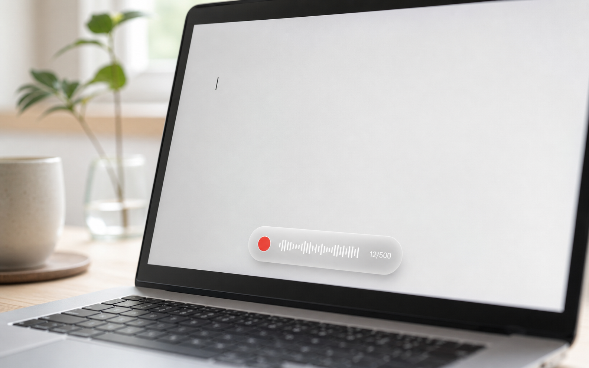
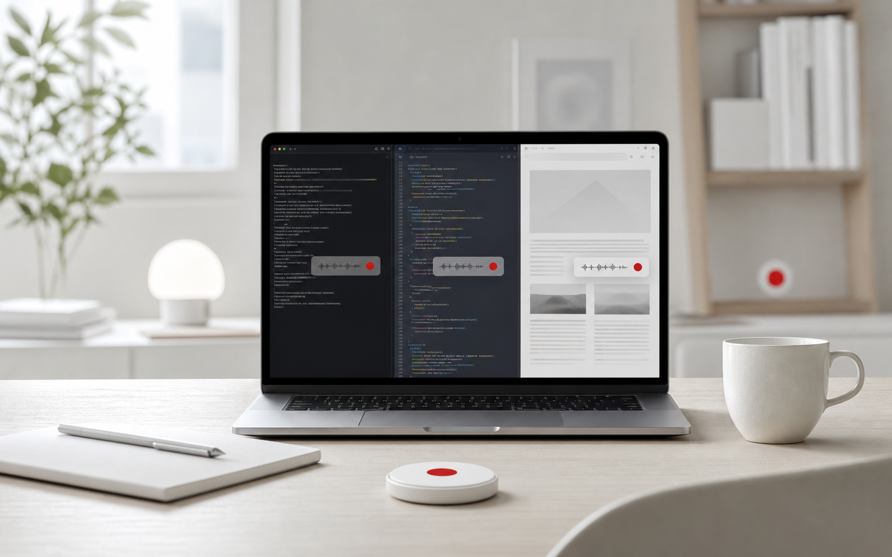

AIで語彙を抽出
ボタン1つで履歴を分析。繰り返し出る重要語は vocab.txt へ自動登録、残りは候補として提示します。
モードもボタンも要らない。キーを押して、話して、離す。それだけ。
200ms 以上の長押しで録音開始。短く押せば通常どおり IME の英字切替として通り抜けます。
US配列なら ⌘ ダブルタップ＆ホールド
画面下に録音HUD（波形・録音ドット・文字数）が出ます。Apple の音声認識がリアルタイムに聞き取ります。
離した瞬間、確定テキストをカーソル位置へ一括挿入。入力中のガタつきがなく、句読点も自動で付きます。
操作はどこまでもシンプルに。賢さは、ぜんぶ裏側に。
「英数」長押し（JIS）／⌘ダブルタップ＆ホールド（US・JIS両対応）。短押しは IME 切替として透過。
明滅する録音ドット、声に流れる波形、認識中の文字数を画面下中央のすりガラスに表示。
置換ルール追加（⌘R）、vocab.txt を開く、語彙レビュー（⌘L）にすぐアクセス。
履歴の一覧、AIで語彙を抽出して自動登録、ルール貢献度の可視化。テキストを手で直接編集も。
接続時は高精度なサーバー認識、オフライン時はオンデバイスへ自動フォールバック。完全オフライン固定も可。
フィラー除去 →（replace.txt の）置換辞書。AIなし・遅延ゼロで整形してから挿入。
vocab.txt を contextualStrings として認識前に注入。誤変換を“事後に直す”のではなく“起こさせない”。
イベントタップの自己監視・再生成、スリープ復帰やオーディオデバイス変更への自動追従。
録音中は、すりガラスのカプセルに波形と文字数。いま聞き取れているか、何文字入ったかが一目で分かります。

履歴からローカルの claude CLI が専門用語・固有名詞を抽出して自動登録。誤変換は“事後修正”ではなく“事前予防”へ。
ボタン1つで履歴を分析。繰り返し出る重要語は vocab.txt へ自動登録、残りは候補として提示します。
置換ルール・登録語が「実際に何回効いたか」を回数順で可視化。0回＝整理候補 として一目で分かります。
vocab.txt / replace.txt はただのテキスト。メニューからでも、エディタで直接でも編集できます。
認識結果を Unicode のキー入力として送出。専用の入力欄も、ブラウザ拡張も要りません。いつものアプリに、そのまま。

ビルドして起動、権限を許可するだけ。配布物ではなく、自分でビルドして使う形です。
# 1. 開発ツール（初回のみ）
xcode-select --install
# 2. 取得してビルド
git clone https://github.com/nakaishota/voice_on.git
cd voice_on
./build.sh
# 3. 起動（メニューバーに 🎙 が出ます）
open VoiceOn.appVoiceOn.app を追加して ONopen VoiceOn.app）効かない時は、項目を一度「−」で削除してから追加し直すと確実です。